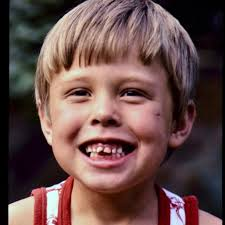
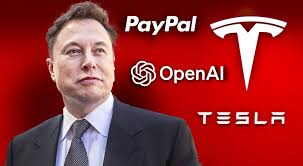
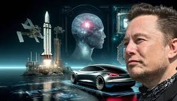

INFANCIA Elon Musk nació el 28 de junio de 1971 en Pretoria, Sudáfrica. Desde muy pequeño mostró una fuerte inclinación por la lectura y la tecnología; pasaba horas sumergido en libros de ciencia ficción, enciclopedias y manuales de computación. A los 10 años tuvo acceso a su primer computador, un Commodore VIC-20, con el que aprendió a programar de manera autodidacta. Poco después, con 12 años, creó y vendió su primer videojuego llamado Blastar. Su infancia no fue siempre sencilla. En la escuela sufrió acoso escolar durante varios años, lo que lo llevó a refugiarse aún más en sus intereses intelectuales. También vivió la separación de sus padres a una edad temprana, lo que marcó parte de su vida familiar. Aun así, esa etapa estuvo llena de curiosidad y creatividad. Musk soñaba con inventar cosas que cambiaran el mundo y ya entonces mostraba el espíritu emprendedor que lo caracterizaría más adelante. Su fascinación por el espacio, la energía y la tecnología nació precisamente en esos años formativos en Sudáfrica. 
 CARRERA PROFESIONAL Elon Musk, nacido en 1971 en Sudáfrica, comenzó su carrera tecnológica con Zip2 y X.com/PayPal, y se convirtió en un empresario visionario al liderar SpaceX (exploración espacial), Tesla (vehículos eléctricos y energía sostenible), Neuralink (neurotecnología), The Boring Company (infraestructuras y transporte subterráneo) y X/Twitter (redes sociales), revolucionando múltiples industrias y promoviendo la innovación tecnológica a escala global.
LOGROS Elon Musk ha logrado revolucionar múltiples industrias a lo largo de su carrera: comenzó con Zip2 y PayPal, transformando los servicios de software para negocios y pagos en línea, y vendiendo PayPal a eBay por 1.500 millones de dólares; luego fundó SpaceX, siendo la primera empresa privada en enviar cohetes al espacio y acoplarse a la Estación Espacial Internacional, desarrollando cohetes reutilizables y buscando la colonización de Marte; como líder de Tesla, popularizó los vehículos eléctricos y promovió la energía solar y el almacenamiento en baterías, con modelos como el Model S, X, 3 y Y; con Neuralink ha impulsado la investigación en interfaces cerebro-ordenador para tratar enfermedades neurológicas y explorar la interacción entre humanos e inteligencia artificial; a través de The Boring Company innovó en túneles urbanos para reducir el tráfico; y con la adquisición de **X/Twitter ha influido en la comunicación global, consolidándose como un catalizador de innovación tecnológica, movilidad sostenible y exploración espacial a nivel mundial. 